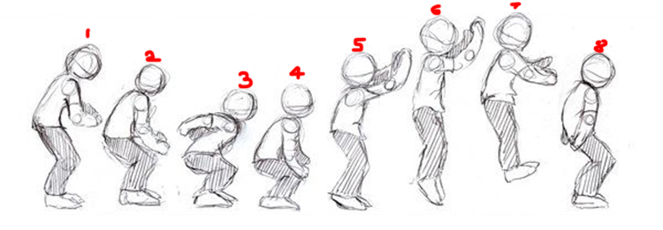
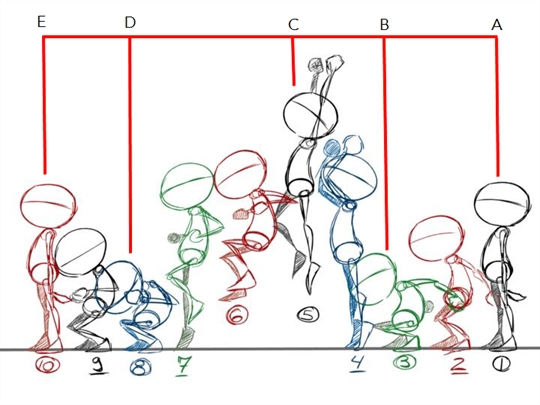

Straight Ahead Action and Pose to Pose
The fourth animation principle, Straight Ahead Action vs. Pose to Pose, is the only principle that hints at how to approach your animation. At first glance, it seems like they’re two separate ideas, as if two different animators tried it out and decided to animate in different ways. However, this principle encompasses much more than that, as it speaks to the vein of different philosophies that have pervaded art for centuries—structure vs. spontaneity, classic vs. romantic, id vs. ego.
1. Straight Ahead
Straight ahead animation starts at the first drawing and works drawing to drawing to the end of a scene. You can lose size, volume, and proportions with this method, but it does have spontaneity and freshness. Fast, wild action scenes are done this way.
2. Pose to Pose
Pose to Pose is more planned out and charted with key drawings done at intervals throughout the scene. Size, volumes, and proportions are controlled better this way, as is the action. The lead animator will turn charting and keys over to his assistant. An assistant can be better used with this method so that the animator doesn’t have to draw every drawing in a scene. An animator can do more scenes this way and concentrate on the planning of the animation.